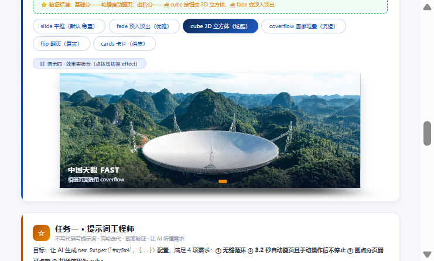

Swiper 轮播组件 · 大国重器光影展（学生版）
HTML 骨架和 CSS 样式已经全部搭好，图片也备齐了——但这个页面的轮播一个都不会动！ 因为所有 <script> 里的 JS 初始化代码都被抽走了。你的任务：把 4 个轮播全部"救活"。
① Swiper 组件库已通过 CDN 引入（页面第 8、9 行），不需要再写引入代码；
② 每个"演示台"下面的绿色卡片就是该任务的要求，JS 代码统一写在页面最底部的
<script> 区域内；③ 每完成一个任务就刷新页面验证：能拖、能点、会自己翻，才算通过；
④ 控制台（F12）报错是你要最好的朋友——先读报错，再改代码。
救活最小轮播三行 JS · 让照片可以拖动
下面是"最小轮播"骨架：三层结构齐全，但因为没有初始化，照片僵在第一张。请写出初始化代码，让它至少可以按住拖动。
✍️ 任务 1 要求
在页面底部 <script> 中初始化 #wySw1，让它成为可拖动的轮播（最基础写法，一个空配置对象即可）。

天宫空间站
2022 年全面建成 · 中国人的太空家园

复兴号动车组
350 km/h · 世界商业运营最高时速

C919 大飞机
2023 年商业首航 · 国产干线客机翱翔蓝天

奋斗者号
10909 米 · 触碰地球第四极马里亚纳海沟

中国天眼 FAST
500 米口径 · 世界最大单口径射电望远镜
装上遥控器pagination 圆点 + navigation 箭头
HTML 里已经埋好了三个"遥控器"元素：#wyPag2（圆点）、#wyPrev2 / #wyNext2（左右箭头）。请通过配置让它们"通电"。
✍️ 任务 2 要求
初始化 #wySw2，实现 4 个效果：① 无缝循环（loop）② 切换动画时长 600 毫秒（speed）③ 圆点分页器且可点击跳转（pagination，别漏 el）④ 两侧箭头可切换（navigation）。
天宫空间站
三舱结构 · 神舟乘组常年值守
复兴号动车组
京张高铁智能驾驶 · 百年京张到智能京张
C919 大飞机
让中国人的大飞机梦照进现实
奋斗者号
坐底万米 · 深海探测进入"中国时代"
中国天眼 FAST
南仁东先生 22 年铸就的观天巨目
让它自己翻页autoplay 自动播放 + loop 无缝续播
网页 Banner 最常见的形态：自己会翻页。autoplay.delay 控制每张停留的毫秒数，disableOnInteraction: false 表示用户手动滑动之后自动播放不停止。
✍️ 任务 3 要求
初始化 #wySw3，实现：① 循环播放 ② 每 2.6 秒自动翻页 ③ 用户拖动之后自动播放继续 ④ 保留底部圆点分页器（#wyPag3）。
天宫空间站
巡天遥看一千河
复兴号动车组
中国速度 · 风驰电掣
C919 大飞机
蓝天之上 · 大国担当
奋斗者号
万米深潜 · 无畏探索
中国天眼 FAST
仰望星空 · 脚踏实地
六种效果随心换effect 参数 + 进阶：按钮实时切换
改一个 effect 参数，轮播立刻换一种"性格"：slide / fade / cube / coverflow / flip / cards。上面的 6 个按钮已经绑好了点击事件（读取 btn.dataset.fx），JS 还需要你补两段。
✍️ 任务 4 要求
基础分：初始化 #wySw4，实现循环 + 自动播放（3.2 秒）+ 圆点分页器（#wyPag4），初始效果为 'slide'，动画时长 800 毫秒。
进阶分：补全按钮点击事件中的 TODO——实现点击按钮切换效果。提示：Swiper 动态换 effect 不能只改参数，需要先销毁旧实例再重建（destroy + new）。
⭐ 验证标准：基础分——轮播自动翻页；进阶分——点 cube 按钮变 3D 立方体、点 fade 变淡入淡出天宫空间站
试试上面的效果按钮
复兴号动车组
同一组照片，六种讲述方式
C919 大飞机
企业官网爱用 fade
奋斗者号
游戏网站爱用 cube
中国天眼 FAST
相册页面爱用 coverflow
任务一 · 提示词工程师不写代码写提示词 · 两轮迭代 · 截图验证 · 让 AI 听懂需求
目标：让 AI 生成 new Swiper('#wySw4', {...}) 配置，满足 4 项需求：① 无缝循环 ② 3.2 秒自动翻页且手动操作后不停止 ③ 圆点分页器可点击 ④ 初始效果为 cube。
第 1 轮 · 我的提示词（初版，比较笼统）
帮我写一个 Swiper 配置：无缝循环播放，3.2 秒自动翻页， 圆点分页器可以点击，效果用 cube。
第 1 轮 · AI 回答
new Swiper('#wySw4', {
loop: true,
autoplay: true, // 简写开关
effect: 'cube',
pagination: { el: '.swiper-pagination' }
});
① autoplay 简写不达标——delay 落回默认 3000ms，不是 3200ms；更重要的是没有
disableOnInteraction: false，用户一拖动自动播放就永久停止，违反需求②；② pagination 漏了 clickable: true——圆点只是指示器，点了没反应，违反需求③；
③ el 用了默认类名——页面里有多个
.swiper-pagination 元素，Swiper 只认匹配到的第一个，分页器归谁全靠碰运气。
autoplay.delay = 3000、pagination.clickable = false。第 2 轮 · 我的提示词（指出遗漏、精确到参数名）
上一轮有 3 处问题，请修正后给完整配置： ① autoplay 要用对象写法：delay 精确为 3200 毫秒， 且必须加 disableOnInteraction: false，手动滑动后不停止； ② pagination 的 el 必须是页面里的 #wyPag4，并加 clickable: true； ③ 保留 loop: true 和 effect: 'cube'，不要改动其它项。
第 2 轮 · AI 回答（最终配置，已粘进页面验证）
new Swiper('#wySw4', {
loop: true, // ① 无缝循环
effect: 'cube', // ④ 初始效果为 cube
speed: 800,
cubeEffect: { slideShadows: true, shadow: true,
shadowOffset: 60, shadowScale: 0.9 },
pagination: { el: '#wyPag4', clickable: true }, // ③ 圆点可点击
autoplay: { delay: 3200, disableOnInteraction: false } // ② 3.2秒且手动后不停止
});
effect = "cube"、autoplay.delay = 3200、clickable = true；点击第 3 个圆点 realIndex 跳到 2，再等 4.5 秒自动走到 4——手动操作后自动播放继续。#wySw4 后实测：无缝循环、3.2 秒自动翻页且手动后不停、圆点可点击跳转、初始 cube 四项需求全部满足。任务二 · creative 仿写（第 7 种效果）读懂官方示例 257-effect-creative · 自定义「电影选片墙」· 追问 prev/next 的 transform
官方示例解读（swiperjs.com/demos/257-effect-creative.html，配合 AI 阅读 effect-creative 模块源码）
creative 是 Swiper 的第 7 种效果（前六种：slide / fade / cube / coverflow / flip / cards）。它的思路完全不同：所有幻灯片全部层叠在同一个位置，每一张按自己的 progress 值（-1 → 0 → 1 的进度）套用两套 transform——progress > 0（已滑过的上一张）套 creativeEffect.prev，progress < 0（还没到的下一张）套 creativeEffect.next，并且 transform 数值会乘以 progress，所以拖动时是连续变化的动画。每套 transform 支持四个属性：
creativeEffect: {
limitProgress: 2, // 两侧最多变换几张
shadowPerProgress: true, // 阴影随进度加深
prev / next: {
translate: [x, y, z], // 三轴位移，数字=px，字符串如 '-16%'/'68%' 按百分比
rotate: [x, y, z], // 三轴旋转角度（度）
opacity: 0~1, // 透明度
scale: 1, // 缩放倍率
}
}
我的「电影选片墙」配置（已写入演示四的第 7 个按钮，点击即切）
creativeEffect: {
limitProgress: 2, // 两侧各露出 2 张，形成选片墙纵深
shadowPerProgress: true, // 越偏离当前张，阴影越重
prev: { // 上一张：缩小左移并带角度
translate: ['-16%', 0, -300],
rotate: [0, 0, -10],
opacity: 0.85,
scale: 0.88
},
next: { // 下一张：放大右移进场
translate: ['68%', 0, -60],
rotate: [0, 0, 8],
opacity: 0.95,
scale: 1.05
}
}
追问 AI：prev / next 的 transform 各控制什么？（用自己的话回答）
prev 控制"已经看过的上一张"退场时变成什么样——它套在 progress > 0 的幻灯片上。我的配置里 translate 的 x 分量 '-16%' 让它往左挪出一段距离、z 分量 -300px 让它往纵深里退（视觉上缩小远离），rotate 的 z 分量 -10° 让它像海报被随手歪贴一样向左倾，再加 scale 0.88 缩小、opacity 0.85 变淡——合起来就是"上一张像旧海报一样缩小左移带角度地退到墙的深处"。
next 控制"还没看到的下一张"从什么样子进场——它套在 progress < 0 的幻灯片上。translate x 分量 '68%' 让它从右侧 68% 的位置探进来，rotate 8° 向右倾，scale 1.05 比当前张还大一点——合起来就是"下一张像大片海报一样从右边放大着滑进来压场"。拖动切换时，两个 transform 都会乘以实时 progress，所以能看到邻片从墙里连续地放大/缩小进出，而不是生硬跳变。
任务三 · 综合创作 + 技术答辩第六件展品爱达·魔都号（AI 生成图）· 新增 keyboard 键盘控制 · 与 AI 的关键对话记录
① 第六件展品：爱达·魔都号（首艘国产大型邮轮 · 2024 年 1 月首航）
用 AI 生成横版 16:9 展品图（swiper-imgs/adora_1.jpg），slide 结构与前五件完全一致：img + .wy-cap 标题说明块，已加入 #wySw4，循环、自动播放、圆点分页器自动覆盖到第 6 张。
② 与 AI 的关键对话记录（新增能力：keyboard 键盘控制）
我：想给 #wySw4 加键盘控制（左右方向键翻页），配置怎么写？会不会影响页面其它部分？
AI：加 keyboard: { enabled: true, onlyInViewport: true }。keyboard 模块把 keydown 监听绑在 document 上，按左/右方向键（也支持 PageUp/PageDown/空格）调用 slidePrev/slideNext；onlyInViewport: true 表示每次按键前先几何计算轮播是否在视口内，不在就忽略——页面上、下其它区域滚动时不会误触翻页。
我（追问）：点效果按钮会 destroy 旧实例再 new 新实例，键盘控制会丢吗？另外页面有输入框，按方向键会干扰打字吗？
AI：会丢——destroy() 时旧实例把自己的监听一并解绑，新实例必须重新带上 keyboard 参数才有键盘支持（我已把它写进切换重建的 cfg）。输入框方面我核对过 Swiper 11 keyboard 模块源码：handle() 开头就检查 document.activeElement，只要焦点在 input / textarea / contentEditable 元素上就直接 return，根本不会走到翻页逻辑——所以输入框打字不会受干扰，无需手动 disable。